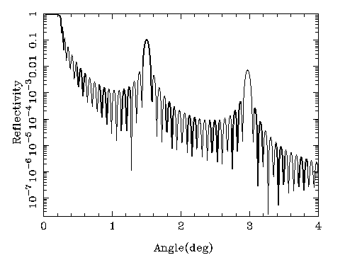

|
Optics
 CXRO calculation for a multilayer
SAXS and WAXS beamlines often have a variety of missions. Specifically, if anomalous scattering is part of it, beamlines are confined to silicon monochromators. However, if there is space for another set of optics, use of multilayers is highly beneficial for boosting the flux. My former beamline D1 was on a bending magnet, but with use of multilayer optics I could hold my own compared to beamlines on insertion devices, but using silicon optics. An overview of the exciting properties and applications of multilayer optics is given in the following article: Alexander Kazimirov, Detlef-M. Smilgies, Qun Shen, Xianghui Xiao, Quan Hao, Ernest Fontes, Don H. Bilderback, Sol M. Gruner, Yuriy Platonov, and Vladimir V. Martynov: "Multilayer X-ray Optics at CHESS", J. Synchrotron Rad. (2006). 13, 204–210. |